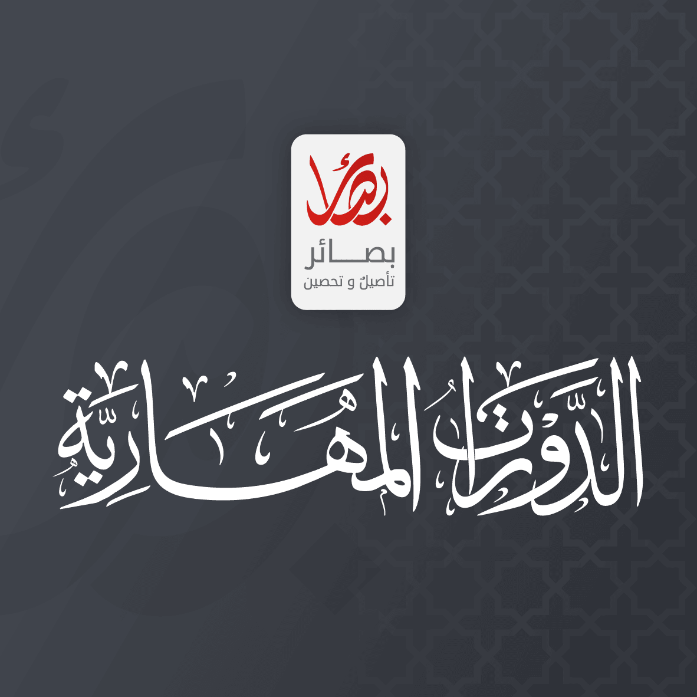
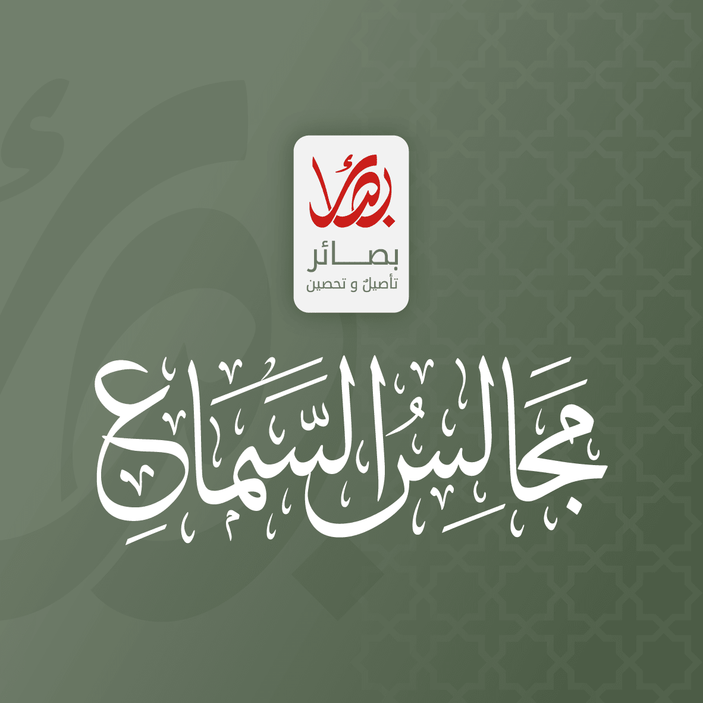
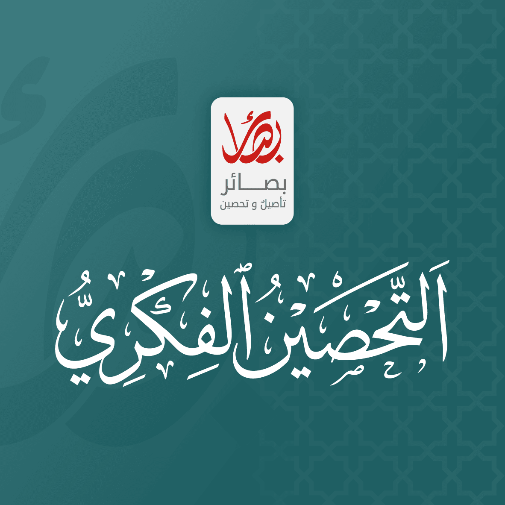

رحلة علمية موثوقة تبدأ من هناتأصيلٌ وتحصينٌ
منصة علمية شرعية متكاملة، تؤهّل وتؤصّل وتحصّن طالب العلم، ضمن أربع مراحل متدرجة وبإشراف نخبة من أهل العلم.
محتوى علمي منظم
دراسة مرنة
اختبارات وشهادات
عن البرنامج
لماذا بصائر؟
منهج واضح، وصحبة علمية، ومتابعة مستمرة تعين طالب العلم على إتمام رحلته.
منهجية متدرجة
أربع مراحل مترابطة تنقل الطالب من التهيئة إلى التأصيل والتحصيل.
نخبة من المحاضرين
دراسة على أيدي متخصصين مع عناية بالفهم والتحرير العلمي.
تقويم ومتابعة
الحضور والاختبارات وتسميع المتون ضمن منظومة متكاملة.
حقيبة علمية
تسجيلات المتون وشروحها، وتشجيرات تعين على المراجعة والمذاكرة.
قصة البرنامج
علمٌ مؤصّل يحفظ الهوية ويبني الوعي
جاء برنامج بصائر استجابةً للحاجة إلى تعليم شرعي منهجي يجمع بين أصالة الموروث ووعي الواقع، ويصنع بيئة علمية تعين الطالب على البناء المتدرج، وتربط المعرفة بالعمل والسلوك.
ومن خلال مراحل مترابطة، وبرامج مكملة، ومتابعة تعليمية مستمرة؛ يسعى البرنامج إلى إعداد طالب علم راسخ، معتدل الفكر، نافعٍ لنفسه ومجتمعه.
تأصيلٌ شرعي، وتحصينٌ فكري
رؤية بصائر لبناء طالب علم يجمع بين رسوخ التأصيل وسلامة الفكر.
إعداد جيل راسخ في العلم ومؤثر في المجتمع
إعداد جيل راسخ في العلم معتدل في الفكر مؤثر في المجتمع، عبر برامج تعليمية منهجية ودورات مهارية نوعية يقدمها معلمون تربويون ومشايخ متخصصون، ضمن منظومة أكاديمية شرعية رائدة، معتمدة ومجازة، بما يعزز بيئة معرفية مستدامة وفاعلة في مملكة البحرين.
تجربة علمية متكاملة
مميزات البرنامج
منظومة تعليمية تجمع بين التأصيل والمتابعة والتقويم، وتوفر لطالب العلم ما يحتاجه للاستمرار والإنجاز.
حفظ للمتون
يوم في الأسبوع
الدراسة حضورية
الدراسة دون رسوم
متابعة منظمة
اختبارات تقويمية
شهادات اجتياز
إجازات وأسانيد
دورات مهارية
برامج إثرائية
منصة إلكترونية
حقيبة تعليمية
رحلة تعليمية متدرجة
مراحل الدراسة في بصائر
أربع مراحل مترابطة، لكل مرحلة أهدافها ومقرراتها ومتطلبات إتمامها. اضغط على أي مرحلة لمعرفة التفاصيل.
امتداد الرحلة العلمية
البرامج المكملة
برامج مساندة توسّع مدارك الطالب، وتنمّي مهاراته، وتعينه على التحصين والبناء المتكامل.

مهارات طالب العلم
الدورات المهارية
مفاتيح وأساليب واستراتيجيات تعين الطالب في المجالات العلمية والتقنية والواقعية، وتقصّر طريق التعلم من خلال الخبرات والتطبيق.

اتصال ورواية
مجالس السماع
مجالس للحديث النبوي الشريف يمر فيها الطالب على قدر من الأحاديث بأسانيدها إلى مصنفيها وإلى النبي ﷺ، ويحصل فيها على إجازة بالسند المتصل.

وعي وبناء
التحصين الفكري
برنامج ذو أولوية قصوى لبناء حصانة تحمي العقل والمجتمع من مخاطر الأفكار المتطرفة والشبهات المضللة والتيارات المنحرفة.
خطوات بسيطة وواضحة
كيف تبدأ رحلتك في بصائر؟
صممنا تجربة التسجيل والدراسة لتصل إلى أول درس دون تعقيد.
أنشئ حسابك- 1
أنشئ حسابك
بيانات أساسية فقط للبدء.
- 2
اختر المرحلة
تعرّف على المرحلة المناسبة لك.
- 3
ابدأ الدراسة
دروس، ملخصات، واختبارات قصيرة.
- 4
تابع تقدمك
لوحة شخصية وشهادة عند الإتمام.
أهداف البرنامج
علمٌ يثمر فهمًا وعملًا
نوازن بين التحصيل العلمي والتربية المنهجية، ليخرج الطالب بأدوات تعينه على مواصلة الطلب.
ضبط أصول العلوم
تكوين أساس راسخ في العلوم الشرعية وعلوم الآلة.
بناء منهجية الطلب
إكساب الطالب مهارات الدراسة والمراجعة والحفظ والبحث.
تعزيز الاستمرار
بيئة محفزة ومتابعة منتظمة تعين على إتمام المراحل.
أدوات مساندة
منظومة تعليمية ترافق الطالب
لا تنتهي التجربة بانتهاء اللقاء؛ بل تمتد عبر منصة إلكترونية وحقيبة علمية منظمة تسهّلان المتابعة والمراجعة.
المنصة الإلكترونية
كل تقدمك في مكان واحد
متابعة الحضور والاختبارات ودرجات تسميع المتون والخطط الدراسية، مع الوصول إلى مواد الدروس والنتائج والشهادات.
- الحضور والغياب
- الاختبارات والنتائج
- درجات التسميع
- الخطط والشهادات
الحقيبة العلمية
مرجع الطالب طوال المرحلة
ملف إلكتروني منظم يجمع المواد اللازمة للمذاكرة، ويظل مرجعًا للطالب أثناء الدراسة وبعدها.
- تسجيلات الدروس
- المتون العلمية
- الشروح المقترحة
- التشجيرات والخرائط
ابدأ اليوم
ابدأ التعلّم
رحلتك في طلب العلم تبدأ بخطوة
انضم إلى مجتمع بصائر، واختر المرحلة التي تناسبك.
قالوا عنا
من كلمات أهل العلم
الشيخ الدكتور عثمان الخميس
“يعني هذا الشيء يثلج الصدر حقيقةً، ويشنف الآذان، ويُنعم العين، ويفرح القلب حقيقةً. ما رأيناه من جهدٍ وجدٍ واجتهاد وحرص، وعدد طيب مبارك من الطلبة الخريجين. يعني وإن كانت هذه السنة الأولى وهذه البداية، فهي بداية مشرقة، وإن شاء الله تعالى ستكون الأيام القادمة أحسن وأحسن. لكن شيء يسعد حقيقةً، وأنا سعيد جداً بما رأيت وسمعت وعلمت من إخواني القائمين على هذه المؤسسة المباركة، جمعية بصائر.
الشيخ الدكتور راشد الهاجري
“وبرنامج بصائر نتيجته -بإذن الله تبارك وتعالى- الصلاح. نحن في إدارة الأوقاف السنية نشرف ونعتز أن نحظى بشرف رعاية مثل هذه المناشط والفعاليات. هذه الفعاليات التي تقوم على عمل مؤسسي متقن وجاد، فأسأل الله تبارك وتعالى أن يبارك في جهود الجميع.
الشيخ الدكتور مطلق الجاسر
“سعيد كذلك ومتابع لهذا البرنامج المميز، برنامج بصائر العلمي، متابع له من الكويت يعني، يرسلون لي المشايخ وأنا أيضاً أدخل وأشوف. وسعدت جداً صراحة بهذا البرنامج المميز الذي يرسم منهجاً علمياً واضحاً مؤصلاً ومناسباً، ويترقى فيه طالب العلم على الطريقة الصحيحة من صغار العلم إلى كباره؛ امتثالاً لقول الله سبحانه وتعالى: ﴿وَلَـٰكِن كُونُوا رَبَّانِيِّينَ بِمَا كُنتُمْ تُعَلِّمُونَ الْكِتَابَ وَبِمَا كُنتُمْ تَدْرُسُونَ﴾. والرباني هو الذي يعلم الناس صغار العلم قبل كباره.
من كلمات الطلاب
درست المرحلة التأسيسية من قبل ولم أكمل، فهل ألتحق من جديد؟ +
نعم؛ لأن الانتقال إلى المرحلة الأعلى يتطلب إتمام المرحلة التي تسبقها.
ما العمر المناسب للاشتراك في المرحلة التأسيسية؟ +
من 15 سنة فما فوق.
هل يمكن حضور البرنامج عن بُعد؟ +
الأصل في الدروس أنها حضورية، وقد تُستثنى بعض الأيام بحسب ظرف الطالب ليتابع عن بُعد.
كيف يجتاز الطالب المرحلة؟ +
الاجتياز مرتبط بثلاثة أمور متكاملة: الحضور، والاختبارات، وتسميع المتون.
هل يتطلب البرنامج حفظ شيء من القرآن؟ +
من شروط المرحلة التأسيسية حفظ ما لا يقل عن ثلاثة أجزاء، ولا يتضمن البرنامج حفظ أجزاء إضافية من القرآن.
هل هناك حفظ لغير القرآن؟ +
نعم، توجد متون إلزامية تدخل في معايير الاجتياز، ومتون تكميلية للطلبة المتميزين.
ما المذاهب الفقهية المتاحة؟ +
المالكي والشافعي والحنبلي، بعد دراسة مدخل عام في الفقه والمذاهب.
ما المخرجات التي يحصل عليها الطالب؟ +
شهادات اجتياز وإجازات وأسانيد علمية، ومنصة لمتابعة النتائج والحضور والتسميع، وحقيبة علمية إلكترونية.
هل الدراسة مناسبة للمبتدئين؟ +
نعم، توجد مراحل تأسيسية تبدأ من المفاهيم الأساسية، مع ترتيب واضح للدروس.
هل الدروس مباشرة أم مسجلة؟ +
تتضمن المنصة دروسًا مسجلة، وقد تُضاف لقاءات مباشرة لبعض البرامج بحسب الجدول.
هل أحصل على شهادة؟ +
تتوفر شهادة إتمام في البرامج التي تتضمن متطلبات حضور واختبارات محددة.
هل يمكنني الدراسة من الهاتف؟ +
نعم، الواجهة متجاوبة ويمكن متابعة الدروس والاختبارات من الهاتف والكمبيوتر.
خدمات نافعة
خدمات بصائر
أدوات ومراجع مختصرة نعمل على توفيرها للزائر في مكان واحد.
--:--
الفجر--:--
الشروق--:--
الظهر--:--
العصر--:--
المغرب--:--
العشاء--:--
يتبقى على دخول وقت --:--:--:--